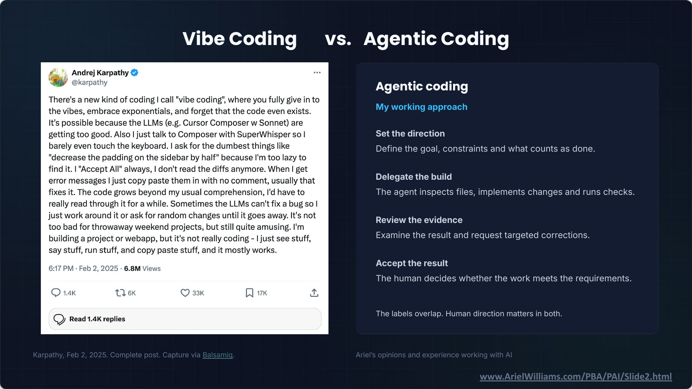

It Works: Agentic Coding and Legal Technology · Slide 2 of 12
Vibe Coding vs. Agentic Coding
Slide snapshot captured · Ariel Williams


Text transcript
Post pictured on the slide
Andrej Karpathy (@karpathy), verified account.
There's a new kind of coding I call "vibe coding", where you fully give in to the vibes, embrace exponentials, and forget that the code even exists. It's possible because the LLMs (e.g. Cursor Composer w Sonnet) are getting too good. Also I just talk to Composer with SuperWhisper so I barely even touch the keyboard. I ask for the dumbest things like "decrease the padding on the sidebar by half" because I'm too lazy to find it. I "Accept All" always, I don't read the diffs anymore. When I get error messages I just copy paste them in with no comment, usually that fixes it. The code grows beyond my usual comprehension, I'd have to really read through it for a while. Sometimes the LLMs can't fix a bug so I just work around it or ask for random changes until it goes away. It's not too bad for throwaway weekend projects, but still quite amusing. I'm building a project or webapp, but it's not really coding - I just see stuff, say stuff, run stuff, and copy paste stuff, and it mostly works.
6:17 PM · Feb 2, 2025 · 6.8M Views
Replies: 1.4K. Reposts: 6K. Likes: 33K. Bookmarks: 17K. Read 1.4K replies.
Agentic coding
My working approach
Set the direction
Define the goal, constraints and what counts as done.
Delegate the build
The agent inspects files, implements changes and runs checks.
Review the evidence
Examine the result and request targeted corrections.
Accept the result
The human decides whether the work meets the requirements.
The labels overlap. Human direction matters in both.
Karpathy, Feb 2, 2025. Complete post. Capture via Balsamiq.
Ariel’s opinions and experience working with AI
Slide footer: www.ArielWilliams.com/PBA/PAI/Slide2.html